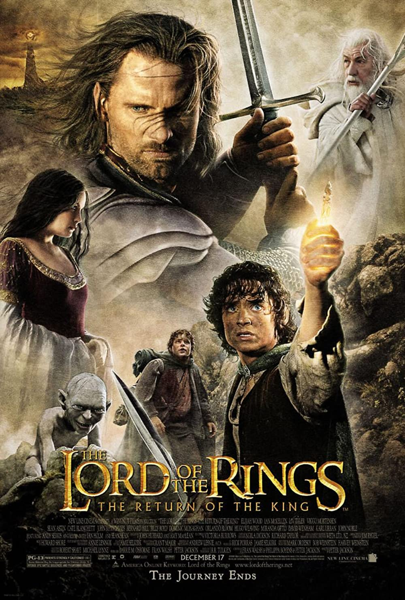

Merhaba ben Hacı BAHÇE, Ankara' da yaşıyorum. Yazılım mühendisiyim. Bilim kurgu filmlerini izlemeyi ve kitap okumayı severim.
Yüzüklerin Efendisi
Gandalf ve Aragorn, Tek Yüzük ile Hüküm Dağı'na yaklaştıklarında bakışlarını Frodo ve Sam'den çekmek için İnsan Dünyası'na Sauron'un ordusuna karşı liderlik ediyor.